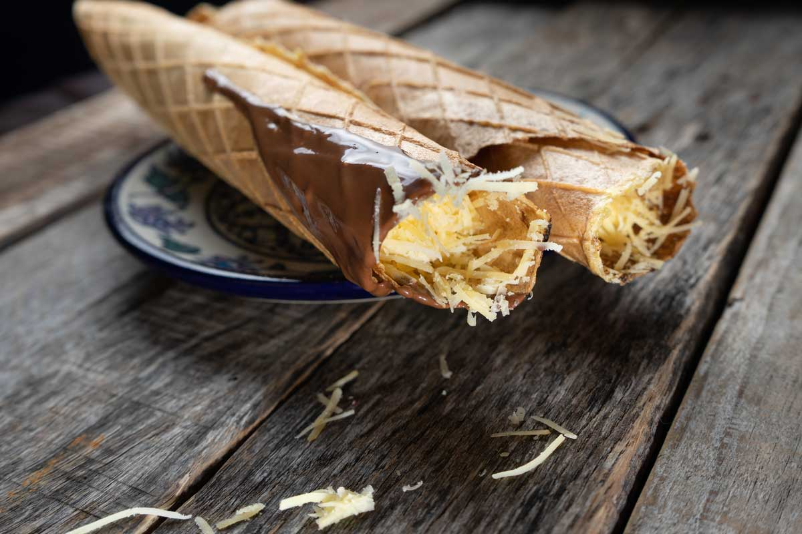

Papadzules

Traditional Yucatecan Marquesita
Sold from street carts in most plazas and parks, marquesitas are one of Mexico’s tastiest treats.
This delicious snack can either be sweet or savory, and comes loaded with flavorful fillings, making it a versatile and popular delight among locals.
A marquesita is a thin wafer dessert that originated from Mérida, Mexico. The dough is rolled and stuffed with various fillings such as custard, chocolate, caramel, or cheese. These delicious treats were invented during a cold winter by an ice cream vendor to offset his seasonal decline in sales.
Ingredients
- 4 eggs plus 2 egg whites
- 2/3 cup granulated sugar
- 3/4 cup canola oil
- 1 cup all-purpose flour
- 1/2 teaspoon kosher or coarse sea salt
- 2/3 cup whole milk
- 1 teaspoon vanilla extract
Directions
- Add all of the batter ingredients to a blender and puree until smooth. Set aside and let rest for 10 minutes, or cover and refrigerate up to 12 hours. Stir before using.
- Heat a 10” crepe pan or flat bottomed non-stick skillet over medium-high heat. Once hot, pour about 1/4 cup of batter and spread out in a circular shape to cover the entire pan. You want to create a very thin layer. Once the bottom begins to become toasted and golden, loosen the edges with a spatula and flip to toast the other side. Continue to flip another 2 times until the batter starts to crisp.
- Add desired filling - chocolate hazelnut spread and Edam cheese are traditional to the Yucatán Peninsula. Roll up into a big and wide roll. As soon as, you remove it from the heat it will begin to crisp up like a wafer cone. Enjoy!